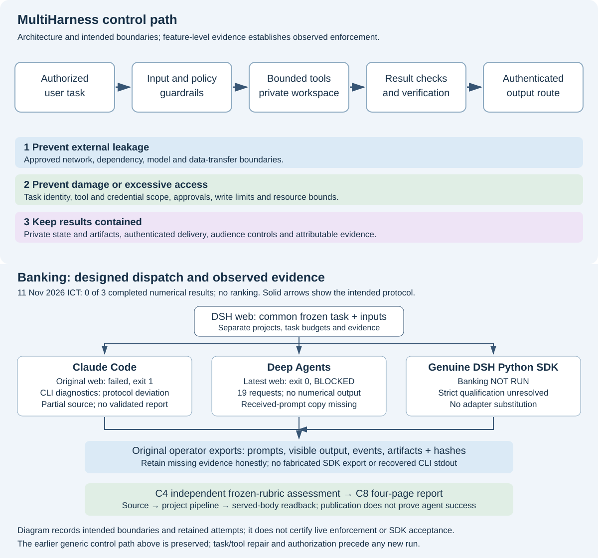

Risk control 1: Prevent external leakage
Keep protected inputs, dependencies and model traffic inside approved network and data boundaries.
Read the controls and user workflowsThe DSH library follows the two exact references, three risk controls and80rows across ten OWASP agentic risks. OpenShell and A2A remain under qualification.
OpenShell and A2A remain under active qualification. Source changes, integration, runtime preflight, cancellation/recovery checks and evidence retention are in progress. Full operational acceptance remains incomplete.
Current state, exact references and all formats เธขเธ— Agent and harness terminologySource, local tests, deployment, served content and operational acceptance remain distinct.
Reference basis: dq-agent-safety.html 7fe84d37879b9196 (DQ safety design) เธขเธ— Internal tool-and-risk assessment workbook 214e604a349bf195 (internal assessment). The three controls and 80-row OWASP crosswalk use these exact editions.
Keep protected inputs, dependencies and model traffic inside approved network and data boundaries.
Read the controls and user workflowsBind tools, credentials, write permission and shared resources to the authorized task and private workspace.
Read the controls and user workflowsReturn artifacts through authenticated, audience-scoped routes and retain private storage and evidence.
Read the controls and user workflowsRead these source documents together with the three risk controls.
The companion tool-and-risk assessment is an internal reference. Its contents are excluded from this public library.

Control architecture and intended boundaries. Use feature-level evidence and recorded tests to distinguish configured controls from observed enforcement.
Feature descriptions, source references, executed tests, release receipts and live acceptance are separate records. Historical reviews keep their observation dates; a document or video listing does not establish current runtime qualification. Operational runbooks and private assessment material remain in the internal repository.
PowerPoint and PPTX refer to the same editable slide format here. All source editions below are registered. Revision and visual-verification status is recorded per edition. Download links are limited to existing bodies actually read back and matched to source.
| Document and owner | Format / slides or pages | Edition state | Existing delivery |
|---|---|---|---|
DSH_Gateway_and_Registry_Code_Walkthrough_20261026.pptxDSH / MultiHarness | PowerPoint (.pptx) 31 | Current-state revision and visual verification pending | Not served at checked library URL (404) |
DSH_Technical_Code_Companion_59slides_20261026.pptxDSH / MultiHarness | PowerPoint (.pptx) 59 | Current-state revision and visual verification pending | Not served at checked library URL (404) |
| gpu-platform/GPU_PLATFORM_REVIEW.pdf GPU / DeepInfer-DSpark (legacy DSH copy) | PDF 17 | Current-state revision and visual verification pending | Exact existing source edition served at the DSH project host; current-state revision pending |
presentations/APP_LOGIN_MAIN_TEST_EN.pptxDSH / MultiHarness | PowerPoint (.pptx) 3 | Current-state content revised; all three slides rendered and visually inspected. Native PowerPoint verification not performed. | Revised edition pending authority integration, release and served-body verification. |
presentations/DSH_Domain_Routing_English.pptxDSH / MultiHarness | PowerPoint (.pptx) 17 | Current-state content revised; all seventeen slides rendered and visually inspected. Native PowerPoint verification not performed. | Revised edition pending authority integration, release and served-body verification. |
presentations/DSH_Main_Test_Status_English.pptxDSH / MultiHarness | PowerPoint (.pptx) 3 | Current-state content revised; all three slides rendered and visually inspected. Native PowerPoint verification not performed. | Revised edition pending authority integration, release and served-body verification. |
presentations/DSH_Pilot_With_Domain_Routing.pptxDSH / MultiHarness | PowerPoint (.pptx) 48 | Current-state revision and visual verification pending | Not served at checked library URL (404) |
| presentations/guarding-the-value-stream/Guarding_the_Value_Stream.pdf DSH / MultiHarness | PDF 24 | Current-state revision and visual verification pending | Exact existing source edition served at the DSH project host; current-state revision pending |
| presentations/guarding-the-value-stream/Guarding_the_Value_Stream.pptx DSH / MultiHarness | PowerPoint (.pptx) 24 | Current-state revision and visual verification pending | Exact existing source edition served at the DSH project host; current-state revision pending |
| presentations/guarding-the-value-stream/Guarding_the_Value_Stream_Story.pdf DSH / MultiHarness | PDF 26 | Current-state revision and visual verification pending | Exact existing source edition served at the DSH project host; current-state revision pending |
| presentations/trust-is-an-architecture/Trust_Is_an_Architecture.pptx DSH / MultiHarness | PowerPoint (.pptx) 27 | Current-state revision and visual verification pending | Exact existing source edition served at the DSH project host; current-state revision pending |
The source snapshot has 79 HTML and 104 Markdown files, including historical and restricted material. It has no Word DOC/DOCX files. Restricted source content is not made public by this inventory.
| Document | Formats | Status |
|---|---|---|
| DQ Agent Safety Layers AGENT_SAFETY_LAYERS | HTML | source edition; publication requires matching release/body receipt |
| DSH RDT Pilot Security-Control Assessment archive/DSH_RDT_PILOT_SECURITY_CONTROL_ASSESSMENT_1303 | MD | source edition; publication requires matching release/body receipt |
| DSH — Controlling Three Security Risks DSH_RDT_PILOT_SECURITY_CONTROL_ASSESSMENT | HTML MD | source edition; publication requires matching release/body receipt |
| DSH Security, Architecture and Governed Controls DSH_SECURITY_ARCHITECTURE_AND_CONTROLS | HTML | source edition; publication requires matching release/body receipt |
| DSH — Controlling Three Security Risks DSH_SECURITY_ENVIRONMENT_AND_FEATURES | HTML MD | source edition; publication requires matching release/body receipt |
| 80-feature control traceability FEATURE_CONTROL_TRACEABILITY | HTML | source edition; publication requires matching release/body receipt |
| Feature matrix by OWASP risk FEATURE_MATRIX_BY_OWASP | HTML | source edition; publication requires matching release/body receipt |
| 80-feature OWASP and control review FEATURE_OWASP_REVIEW | HTML | source edition; publication requires matching release/body receipt |
| DSH MultiHarness comparison and evidence GOVERNED_HARNESS_COMPARISON_PHASE_A | HTML | source edition; publication requires matching release/body receipt |
| GOVERNED_HARNESS_OWASP.html GOVERNED_HARNESS_OWASP | HTML | source edition; publication requires matching release/body receipt |
| MultiHarness current state and documentation map LIBRARY_CURRENT_STATE | HTML MD | source edition; publication requires matching release/body receipt |
| Per-user execution isolation and the original environment design PER_USER_ISOLATION | MD | source edition; publication requires matching release/body receipt |
| Three containment boundaries SECURITY | MD | source edition; publication requires matching release/body receipt |
| Security by OWASP: the DSH controls grouped by the ten agentic risks SECURITY_BY_OWASP | HTML | source edition; publication requires matching release/body receipt |
| DSH — Controlling Three Security Risks THREE_RISK_CONTROLS | HTML MD | source edition; publication requires matching release/body receipt |
| Document | Formats | Status |
|---|---|---|
| DSH — Application URLs and ingress APP_URLS_AND_INGRESS | HTML MD | source edition; publication requires matching release/body receipt |
| DSH Platform Guide — Features, Deployments, Usage and LLM/GPU Setup DSH_PLATFORM_GUIDE | HTML MD | source edition; publication requires matching release/body receipt |
| DSH application URLs, access and sessions DYNAMIC_APP_GATEWAY | repository only | repository only: internal hostnames and gateway operations detail |
| DSH architecture review GOVERNED_HARNESS_ARCHITECTURE | HTML | source edition; publication requires matching release/body receipt |
| DSH MultiHarness executive comparison - provisional GOVERNED_HARNESS_EXECUTIVE | HTML | source edition; publication requires matching release/body receipt |
| GOVERNED_HARNESS_READING_GUIDE.html GOVERNED_HARNESS_READING_GUIDE | HTML | source edition; publication requires matching release/body receipt |
| GOVERNED_HARNESS_ROADMAP.html GOVERNED_HARNESS_ROADMAP | HTML | source edition; publication requires matching release/body receipt |
| MultiHarness terminology HARNESS_TERMINOLOGY | HTML MD | source edition; publication requires matching release/body receipt |
| On-demand Jupyter for legacy owner workspaces LEGACY_JUPYTER_GATEWAY | MD | source edition; publication requires matching release/body receipt |
| Current registry architecture comparison REGISTRY_ARCHITECTURE_COMPARISON_CURRENT | repository only | repository only: links to a repository-only page (REGISTRY_DELIVERY_AND_RKE2.html) |
| Registry delivery and RKE2 verification REGISTRY_DELIVERY_AND_RKE2 | repository only | repository only: internal registry and cluster hostnames |
| Registry delivery current documents REGISTRY_INDEX_CURRENT | repository only | repository only: links to video and review files that are not in the repository |
| Optional persistent secondary registry SECONDARY_REGISTRY | repository only | repository only: registry credential procedures |
| DSH — Shared client platform guide SHARED_PLATFORM_GUIDE | HTML MD | source edition; publication requires matching release/body receipt |
| Document | Formats | Status |
|---|---|---|
| DSH — Admin application management walkthrough ADMIN_APPLICATIONS_WALKTHROUGH | HTML | source edition; publication requires matching release/body receipt |
| DSH — Managed service startup walkthrough APP_AUTOSTART_WALKTHROUGH | HTML | source edition; publication requires matching release/body receipt |
| Share an application through authenticated routes AUTHENTICATED_APP_SHARING_WALKTHROUGH | HTML | source edition; publication requires matching release/body receipt |
| DSH — Account capacity walkthrough AUTOMATIC_CAPACITY_WALKTHROUGH | HTML | source edition; publication requires matching release/body receipt |
| DSH course currentness review COURSE_CURRENTNESS | HTML | source edition; publication requires matching release/body receipt |
| Risk-first course delivery COURSE_DELIVERY | MD | source edition; publication requires matching release/body receipt |
| DSH video course COURSE_GUIDE | HTML MD | source edition; publication requires matching release/body receipt |
| DSH — Course navigation walkthrough COURSE_WALKTHROUGH | HTML | source edition; publication requires matching release/body receipt |
| DSH code walkthrough videos DSH_CODE_VIDEO_INDEX | repository only | repository only: links to video and review files that are not in the repository |
| DSH course notes DSH_COURSE_NOTES | HTML | source edition; publication requires matching release/body receipt |
| DSH Current Guide DSH_CURRENT_GUIDE | HTML MD | source edition; publication requires matching release/body receipt |
| DSH Guided Tour DSH_GUIDED_TOUR | HTML | source edition; publication requires matching release/body receipt |
| GOVERNED_HARNESS_SCENARIOS.html GOVERNED_HARNESS_SCENARIOS | HTML | source edition; publication requires matching release/body receipt |
| Reproduce authenticated GPU course routing GPU_COURSE_BRIDGE | MD | source edition; publication requires matching release/body receipt |
| Jupyter in your assigned environment JUPYTER_DSH2_DSH3_WALKTHROUGH | HTML | source edition; publication requires matching release/body receipt |
| DSH — JupyterLab notebook walkthrough JUPYTERLAB_WALKTHROUGH | HTML | source edition; publication requires matching release/body receipt |
| Main and Test application access: English update media/main-test-status-video | repository only | repository only: internal hostnames |
| English DSH videos and presentations PRESENTATION_EDITION | MD | source edition; publication requires matching release/body receipt |
| Package self-service implementation lessons SELF_SERVICE_PACKAGES_EXPERIENCE | MD | source edition; publication requires matching release/body receipt |
| DSH — Self-service package walkthrough SELF_SERVICE_PACKAGES_WALKTHROUGH | HTML | source edition; publication requires matching release/body receipt |
| Video narration and captions VIDEO_NARRATION_STANDARD | MD | source edition; publication requires matching release/body receipt |
| Document | Formats | Status |
|---|---|---|
| A2A task delegation and evidence — DSH A2A_TASK_DELEGATION | HTML | source edition; publication requires matching release/body receipt |
| Agent runtime and execution backend - DSH AGENT_RUNTIME_AND_EXECUTION_BACKENDS | HTML MD | source edition; publication requires matching release/body receipt |
| Automatic activation after workspace replacement AUTOMATIC_CLIENT_ACTIVATION | MD | source edition; publication requires matching release/body receipt |
| Banking exercise: evidence and comparison BANKING_AGENT_REVIEW | HTML | source edition; publication requires matching release/body receipt |
| Claude Code: banking exercise evidence BANKING_CLAUDE_CODE | HTML | source edition; publication requires matching release/body receipt |
| Deep Agents: banking exercise evidence BANKING_DEEP_AGENTS | HTML | source edition; publication requires matching release/body receipt |
| DSH Python SDK: banking exercise evidence BANKING_DSH_PYTHON_SDK | HTML | source edition; publication requires matching release/body receipt |
| Managed client workspace file tools CLIENT_WORKSPACE_FILE_TOOLS | MD | source edition; publication requires matching release/body receipt |
| MultiHarness and managed agent-runtime comparison GOVERNED_HARNESS_RUNTIME_COMPARISON | HTML | source edition; publication requires matching release/body receipt |
| Existing-workspace client compatibility layer LIVE_CLIENT_COMPATIBILITY | MD | source edition; publication requires matching release/body receipt |
| Managed Claude Code and TrueForge in DSH MANAGED_CLAUDE_AND_TRUEFORGE | repository only | repository only: internal hostnames and managed-client settings |
| Managed coding clients inside DSH MANAGED_CLIENT_SUPPORT | HTML MD | source edition; publication requires matching release/body receipt |
| Validate managed coding clients MANAGED_CLIENT_VALIDATION | MD | source edition; publication requires matching release/body receipt |
| Team login and managed model access MANAGED_PROVIDER_LOGIN | HTML MD | source edition; publication requires matching release/body receipt |
| DSH — Capacity, monitoring and client guidance PLATFORM_CAPACITY_AND_CLIENTS | HTML MD | source edition; publication requires matching release/body receipt |
| Document | Formats | Status |
|---|---|---|
| DSH — Account capacity and automatic preparation AUTOMATIC_ACCOUNT_CAPACITY | HTML MD | source edition; publication requires matching release/body receipt |
| DeepSeek-V4.1 Flash capacity: how much load the live stack handles - 9 Nov 2026 (revision 5) CAPACITY_REPORT | MD | source edition; publication requires matching release/body receipt |
| 1M context: architecture, tuning and qualification CONTEXT_1M | MD | source edition; publication requires matching release/body receipt |
| Portable GPU + LiteLLM + 1M reference reference/GPU_STACK_README | MD | source edition; publication requires matching release/body receipt |
| Signup admission under resource pressure SIGNUP_CAPACITY | MD | source edition; publication requires matching release/body receipt |
| Document | Formats | Status |
|---|---|---|
| Admin dashboard ADMIN_DASHBOARD | repository only | repository only: internal hostnames |
| DSH administrator — usage and storage ADMIN_USAGE_TELEMETRY | HTML MD | source edition; publication requires matching release/body receipt |
| Application links and Main versus Test APP_LINKS_AND_STATUS | HTML MD | source edition; publication requires matching release/body receipt |
| Application access and HTTPS proxy setup APP_PROXY | MD | source edition; publication requires matching release/body receipt |
| DSH — Managed startup and isolation APP_SERVICE_SUPERVISION | HTML MD | source edition; publication requires matching release/body receipt |
| Application sign-in and return APP_SIGNIN_AND_RETURN | HTML MD | source edition; publication requires matching release/body receipt |
| Authenticated application sharing AUTHENTICATED_APP_SHARING | HTML MD | source edition; publication requires matching release/body receipt |
| Credential page theme qualification CREDENTIAL_THEME_QUALIFICATION | MD | source edition; publication requires matching release/body receipt |
| DSH User Manual — Everyday Use, Controls, Setup and Tests DSH_USER_MANUAL | HTML MD | source edition; publication requires matching release/body receipt |
| DSH — Fresh Signup and Shared Tools FRESH_SIGNUP_ACCEPTANCE | HTML MD | source edition; publication requires matching release/body receipt |
| Jupyter and managed application lifecycle JUPYTER_APP_LIFECYCLE | HTML MD | source edition; publication requires matching release/body receipt |
| AD / LDAP sign-in LDAP_AUTHENTICATION | MD | source edition; publication requires matching release/body receipt |
| Main and Test application access: English update media/APP_LOGIN_MAIN_TEST_EN | HTML | source edition; publication requires matching release/body receipt |
| DSH — Self-service Python packages SELF_SERVICE_PACKAGES | HTML MD | source edition; publication requires matching release/body receipt |
| DSH — Create an Account and Approve Internet SELF_SERVICE_SIGNUP | HTML MD | source edition; publication requires matching release/body receipt |
| User-managed credentials — DSH USER_CREDENTIAL_MANAGEMENT | HTML MD | source edition; publication requires matching release/body receipt |
| Document | Formats | Status |
|---|---|---|
| DSH — Internal Git trust and restart-safe setup CORPORATE_GIT_BOOTSTRAP | HTML MD | source edition; publication requires matching release/body receipt |
| DSH — Flexible deployment and inference endpoints FLEXIBLE_DEPLOYMENT | HTML MD | source edition; publication requires matching release/body receipt |
| Publish the manual without restarting user workspaces MANUAL_PUBLICATION | MD | source edition; publication requires matching release/body receipt |
| Source-grounded repository review REPOSITORY_REVIEW_CITATION_PROTOCOL | MD | source edition; publication requires matching release/body receipt |
| Upstream patch inventory and maintenance boundaries UPSTREAM_PATCH_INVENTORY | MD | source edition; publication requires matching release/body receipt |
| DSH — Upstream upgrades and history recovery UPSTREAM_SYNC_AND_INTERNET_POLICY | HTML MD | source edition; publication requires matching release/body receipt |
| Document | Formats | Status |
|---|---|---|
| Diagram asset provenance assets/PROVENANCE | MD | source edition; publication requires matching release/body receipt |
| BrowserCode and BOT DSH — Architecture and Risk Review BROWSERCODE_AND_BOT_DSH_REVIEW | HTML MD | source edition; publication requires matching release/body receipt |
| Central dashboard and activity logging — scope and design CENTRAL_DASHBOARD_SCOPE | MD | source edition; publication requires matching release/body receipt |
| Central durable state restoration — 15 October 2026 CENTRAL_STATE_RESTORATION_20261015 | MD | source edition; publication requires matching release/body receipt |
| DeepSeek-V4.1-Flash context optimization evidence CONTEXT_OPTIMIZATION_20261015 | MD | source edition; publication requires matching release/body receipt |
| DA_WORKSPACE: original requirement, storage drift and verified correction DA_WORKSPACE_DESIGN_REVIEW_20261015 | repository only | repository only: internal hostnames in a design review |
| DSH documentation release workflow DSH_DOCUMENTATION_RELEASE | HTML | source edition; publication requires matching release/body receipt |
| DSH network zones DSH_NETWORK_ZONES | HTML | source edition; publication requires matching release/body receipt |
| End-to-end DSH 1M — Rollout and Engineering Experience END_TO_END_1M_ROLLOUT_20261016 | repository only | repository only: internal hostnames in a rollout record |
| First-come, first-reserved workspaces FIRST_COME_WORKSPACES | repository only | repository only: internal hostnames (a sanitised copy is in the public repository) |
| Jupyter and managed application lifecycle JUPYTER_AUTOSTART_BACKFILL | HTML MD | source edition; publication requires matching release/body receipt |
| Open Jupyter when needed JUPYTER_ON_DEMAND | MD | source edition; publication requires matching release/body receipt |
| Jupyter and managed application lifecycle JUPYTER_START_CONTROLS | HTML MD | source edition; publication requires matching release/body receipt |
| JupyterLab in a private DSH environment JUPYTERLAB | HTML MD | source edition; publication requires matching release/body receipt |
| LDAP application sign-in acceptance - 23 October 2026 LDAP_APP_LOGIN_ACCEPTANCE_20261023 | MD | source edition; publication requires matching release/body receipt |
| LDAP deployment - 22 October 2026 LDAP_DEPLOYMENT_20261022 | MD | source edition; publication requires matching release/body receipt |
| LLM Speed Comparison LLM_SPEED_COMPARISON_20261030 | HTML | source edition; publication requires matching release/body receipt |
| DSH storage and persistence — current deployed design MULTI_TENANT_STORAGE_AND_PERSISTENCE | MD | source edition; publication requires matching release/body receipt |
| Native DSH theme integration NATIVE_THEME_INTEGRATION | MD | source edition; publication requires matching release/body receipt |
| End-to-end 1M rollout: implementation and actual acceptance ONE_M_CANDIDATE_CHECKPOINT_20261016 | MD | source edition; publication requires matching release/body receipt |
| OpenShell runtime qualification OPENSHELL_RUNTIME_PREREQUISITES | MD | source edition; publication requires matching release/body receipt |
| RDT pilot control closure: implementation and evidence RDT_CONTROL_CLOSURE_PROGRESS_20261015 | repository only | repository only: internal hostnames in a progress record |
| Private AI Workspaces - Kubernetes and 1M Context reference/DSH_REPOSITORY_README | MD | source edition; publication requires matching release/body receipt |
| Interactive scheduling: interference, correction and evidence SCHEDULING_FAIRNESS_20261015 | MD | source edition; publication requires matching release/body receipt |
| Admission note - official SDK wheel pair 0.2.2a2 (built on Kubernetes, run W10) sdk-wheel-0.2.2a2/SDK_WHEEL_ADMISSION_NOTE_0.2.2a2 | repository only | repository only: internal hostnames in an admission note |
| Where the sealed wheels are (they are not stored in git) sdk-wheel-0.2.2a2/WHEELS_LOCATION | MD | source edition; publication requires matching release/body receipt |
| Secondary registry operational status — 24 October 2026 SECONDARY_REGISTRY_STATUS_20261024 | repository only | repository only: internal hostnames in a status record |
| PowerPoint companion downloads (retired) SLIDE_DOWNLOADS | MD | source edition; publication requires matching release/body receipt |
| DSH site compatibility and maintenance — 24 October 2026 THREE_SITE_SYNC_20261024 | MD | source edition; publication requires matching release/body receipt |
Every documentation page, one row per document (the HTML edition where there is one). Evidence data files are under context-evidence/ in the repository and are not listed.
| Document | Category | Formats |
|---|---|---|
| A2A task delegation and evidence — DSH | Agents, A2A and managed clients | HTML |
| DSH — Admin application management walkthrough | Use cases, scenarios, courses and guided tours | HTML |
| Admin dashboard | Features and user and administrator guides | repository only |
| DSH administrator — usage and storage | Features and user and administrator guides | HTML MD |
| Agent runtime and execution backend - DSH | Agents, A2A and managed clients | HTML MD |
| DQ Agent Safety Layers | The three risk controls, OWASP and safety layers | HTML |
| DSH — Managed service startup walkthrough | Use cases, scenarios, courses and guided tours | HTML |
| Application links and Main versus Test | Features and user and administrator guides | HTML MD |
| Application access and HTTPS proxy setup | Features and user and administrator guides | MD |
| DSH — Managed startup and isolation | Features and user and administrator guides | HTML MD |
| Application sign-in and return | Features and user and administrator guides | HTML MD |
| DSH — Application URLs and ingress | Architecture, system design and diagrams | HTML MD |
| DSH RDT Pilot Security-Control Assessment | The three risk controls, OWASP and safety layers | MD |
| Diagram asset provenance | Engineering records, reviews and archive | MD |
| Authenticated application sharing | Features and user and administrator guides | HTML MD |
| Share an application through authenticated routes | Use cases, scenarios, courses and guided tours | HTML |
| DSH — Account capacity and automatic preparation | Inference, GPU, capacity and speed | HTML MD |
| DSH — Account capacity walkthrough | Use cases, scenarios, courses and guided tours | HTML |
| Automatic activation after workspace replacement | Agents, A2A and managed clients | MD |
| Banking exercise: evidence and comparison | Agents, A2A and managed clients | HTML |
| Claude Code: banking exercise evidence | Agents, A2A and managed clients | HTML |
| Deep Agents: banking exercise evidence | Agents, A2A and managed clients | HTML |
| DSH Python SDK: banking exercise evidence | Agents, A2A and managed clients | HTML |
| BrowserCode and BOT DSH — Architecture and Risk Review | Engineering records, reviews and archive | HTML MD |
| DeepSeek-V4.1 Flash capacity: how much load the live stack handles - 9 Nov 2026 (revision 5) | Inference, GPU, capacity and speed | MD |
| Central dashboard and activity logging — scope and design | Engineering records, reviews and archive | MD |
| Central durable state restoration — 15 October 2026 | Engineering records, reviews and archive | MD |
| Managed client workspace file tools | Agents, A2A and managed clients | MD |
| 1M context: architecture, tuning and qualification | Inference, GPU, capacity and speed | MD |
| DeepSeek-V4.1-Flash context optimization evidence | Engineering records, reviews and archive | MD |
| DSH — Internal Git trust and restart-safe setup | Operations, deployment and upstream | HTML MD |
| DSH course currentness review | Use cases, scenarios, courses and guided tours | HTML |
| Risk-first course delivery | Use cases, scenarios, courses and guided tours | MD |
| DSH video course | Use cases, scenarios, courses and guided tours | HTML MD |
| DSH — Course navigation walkthrough | Use cases, scenarios, courses and guided tours | HTML |
| Credential page theme qualification | Features and user and administrator guides | MD |
| DA_WORKSPACE: original requirement, storage drift and verified correction | Engineering records, reviews and archive | repository only |
| DSH code walkthrough videos | Use cases, scenarios, courses and guided tours | repository only |
| DSH course notes | Use cases, scenarios, courses and guided tours | HTML |
| DSH Current Guide | Use cases, scenarios, courses and guided tours | HTML MD |
| DSH documentation release workflow | Engineering records, reviews and archive | HTML |
| DSH Guided Tour | Use cases, scenarios, courses and guided tours | HTML |
| DSH network zones | Engineering records, reviews and archive | HTML |
| DSH Platform Guide — Features, Deployments, Usage and LLM/GPU Setup | Architecture, system design and diagrams | HTML MD |
| DSH — Controlling Three Security Risks | The three risk controls, OWASP and safety layers | HTML MD |
| DSH Security, Architecture and Governed Controls | The three risk controls, OWASP and safety layers | HTML |
| DSH — Controlling Three Security Risks | The three risk controls, OWASP and safety layers | HTML MD |
| DSH User Manual — Everyday Use, Controls, Setup and Tests | Features and user and administrator guides | HTML MD |
| DSH application URLs, access and sessions | Architecture, system design and diagrams | repository only |
| End-to-end DSH 1M — Rollout and Engineering Experience | Engineering records, reviews and archive | repository only |
| 80-feature control traceability | The three risk controls, OWASP and safety layers | HTML |
| Feature matrix by OWASP risk | The three risk controls, OWASP and safety layers | HTML |
| 80-feature OWASP and control review | The three risk controls, OWASP and safety layers | HTML |
| First-come, first-reserved workspaces | Engineering records, reviews and archive | repository only |
| DSH — Flexible deployment and inference endpoints | Operations, deployment and upstream | HTML MD |
| DSH — Fresh Signup and Shared Tools | Features and user and administrator guides | HTML MD |
| DSH architecture review | Architecture, system design and diagrams | HTML |
| DSH MultiHarness comparison and evidence | The three risk controls, OWASP and safety layers | HTML |
| DSH MultiHarness executive comparison - provisional | Architecture, system design and diagrams | HTML |
| GOVERNED_HARNESS_OWASP.html | The three risk controls, OWASP and safety layers | HTML |
| GOVERNED_HARNESS_READING_GUIDE.html | Architecture, system design and diagrams | HTML |
| GOVERNED_HARNESS_ROADMAP.html | Architecture, system design and diagrams | HTML |
| MultiHarness and managed agent-runtime comparison | Agents, A2A and managed clients | HTML |
| GOVERNED_HARNESS_SCENARIOS.html | Use cases, scenarios, courses and guided tours | HTML |
| Reproduce authenticated GPU course routing | Use cases, scenarios, courses and guided tours | MD |
| MultiHarness terminology | Architecture, system design and diagrams | HTML MD |
| Jupyter and managed application lifecycle | Features and user and administrator guides | HTML MD |
| Jupyter and managed application lifecycle | Engineering records, reviews and archive | HTML MD |
| Jupyter in your assigned environment | Use cases, scenarios, courses and guided tours | HTML |
| Open Jupyter when needed | Engineering records, reviews and archive | MD |
| Jupyter and managed application lifecycle | Engineering records, reviews and archive | HTML MD |
| JupyterLab in a private DSH environment | Engineering records, reviews and archive | HTML MD |
| DSH — JupyterLab notebook walkthrough | Use cases, scenarios, courses and guided tours | HTML |
| LDAP application sign-in acceptance - 23 October 2026 | Engineering records, reviews and archive | MD |
| AD / LDAP sign-in | Features and user and administrator guides | MD |
| LDAP deployment - 22 October 2026 | Engineering records, reviews and archive | MD |
| On-demand Jupyter for legacy owner workspaces | Architecture, system design and diagrams | MD |
| MultiHarness current state and documentation map | The three risk controls, OWASP and safety layers | HTML MD |
| Existing-workspace client compatibility layer | Agents, A2A and managed clients | MD |
| LLM Speed Comparison | Engineering records, reviews and archive | HTML |
| Managed Claude Code and TrueForge in DSH | Agents, A2A and managed clients | repository only |
| Managed coding clients inside DSH | Agents, A2A and managed clients | HTML MD |
| Validate managed coding clients | Agents, A2A and managed clients | MD |
| Team login and managed model access | Agents, A2A and managed clients | HTML MD |
| Publish the manual without restarting user workspaces | Operations, deployment and upstream | MD |
| Main and Test application access: English update | Features and user and administrator guides | HTML |
| Main and Test application access: English update | Use cases, scenarios, courses and guided tours | repository only |
| DSH storage and persistence — current deployed design | Engineering records, reviews and archive | MD |
| Native DSH theme integration | Engineering records, reviews and archive | MD |
| End-to-end 1M rollout: implementation and actual acceptance | Engineering records, reviews and archive | MD |
| OpenShell runtime qualification | Engineering records, reviews and archive | MD |
| Per-user execution isolation and the original environment design | The three risk controls, OWASP and safety layers | MD |
| DSH — Capacity, monitoring and client guidance | Agents, A2A and managed clients | HTML MD |
| English DSH videos and presentations | Use cases, scenarios, courses and guided tours | MD |
| RDT pilot control closure: implementation and evidence | Engineering records, reviews and archive | repository only |
| Private AI Workspaces - Kubernetes and 1M Context | Engineering records, reviews and archive | MD |
| Portable GPU + LiteLLM + 1M reference | Inference, GPU, capacity and speed | MD |
| Current registry architecture comparison | Architecture, system design and diagrams | repository only |
| Registry delivery and RKE2 verification | Architecture, system design and diagrams | repository only |
| Registry delivery current documents | Architecture, system design and diagrams | repository only |
| Source-grounded repository review | Operations, deployment and upstream | MD |
| Interactive scheduling: interference, correction and evidence | Engineering records, reviews and archive | MD |
| Admission note - official SDK wheel pair 0.2.2a2 (built on Kubernetes, run W10) | Engineering records, reviews and archive | repository only |
| Where the sealed wheels are (they are not stored in git) | Engineering records, reviews and archive | MD |
| Optional persistent secondary registry | Architecture, system design and diagrams | repository only |
| Secondary registry operational status — 24 October 2026 | Engineering records, reviews and archive | repository only |
| Three containment boundaries | The three risk controls, OWASP and safety layers | MD |
| Security by OWASP: the DSH controls grouped by the ten agentic risks | The three risk controls, OWASP and safety layers | HTML |
| DSH — Self-service Python packages | Features and user and administrator guides | HTML MD |
| Package self-service implementation lessons | Use cases, scenarios, courses and guided tours | MD |
| DSH — Self-service package walkthrough | Use cases, scenarios, courses and guided tours | HTML |
| DSH — Create an Account and Approve Internet | Features and user and administrator guides | HTML MD |
| DSH — Shared client platform guide | Architecture, system design and diagrams | HTML MD |
| Signup admission under resource pressure | Inference, GPU, capacity and speed | MD |
| PowerPoint companion downloads (retired) | Engineering records, reviews and archive | MD |
| DSH — Controlling Three Security Risks | The three risk controls, OWASP and safety layers | HTML MD |
| DSH site compatibility and maintenance — 24 October 2026 | Engineering records, reviews and archive | MD |
| Upstream patch inventory and maintenance boundaries | Operations, deployment and upstream | MD |
| DSH — Upstream upgrades and history recovery | Operations, deployment and upstream | HTML MD |
| User-managed credentials — DSH | Features and user and administrator guides | HTML MD |
| Video narration and captions | Use cases, scenarios, courses and guided tours | MD |